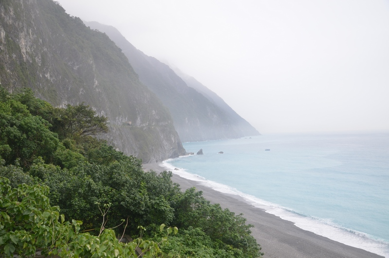
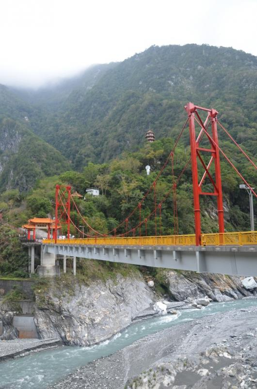
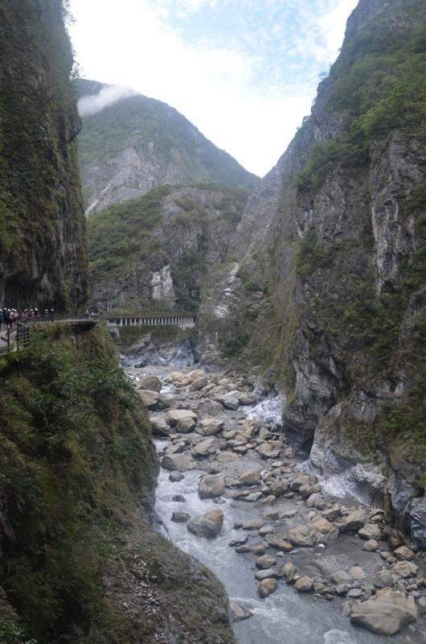
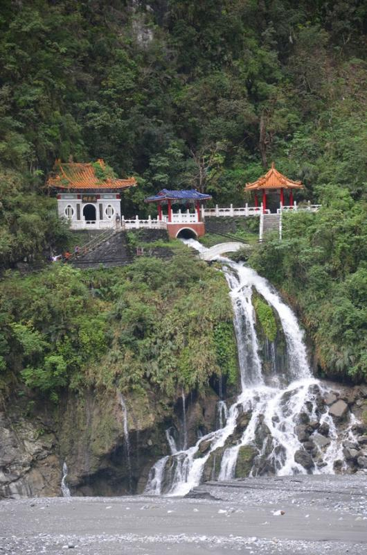
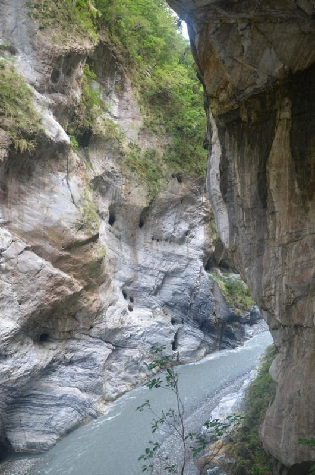
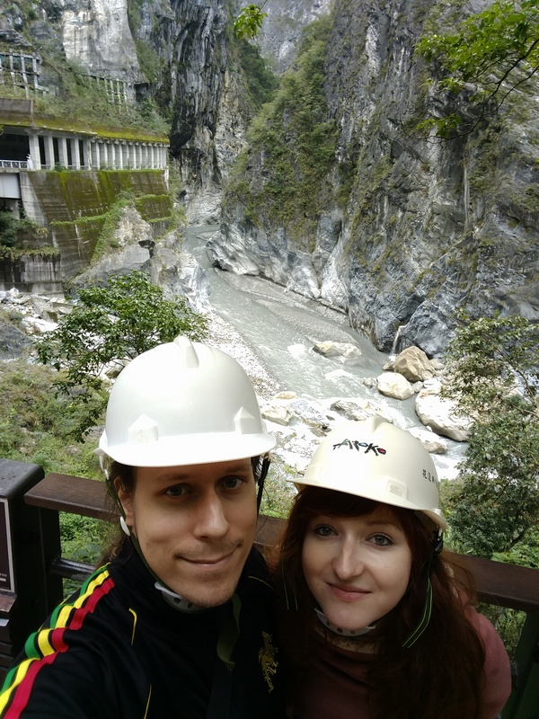
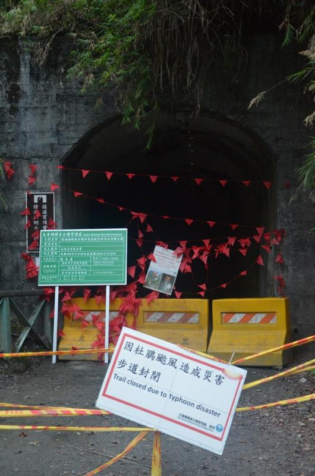
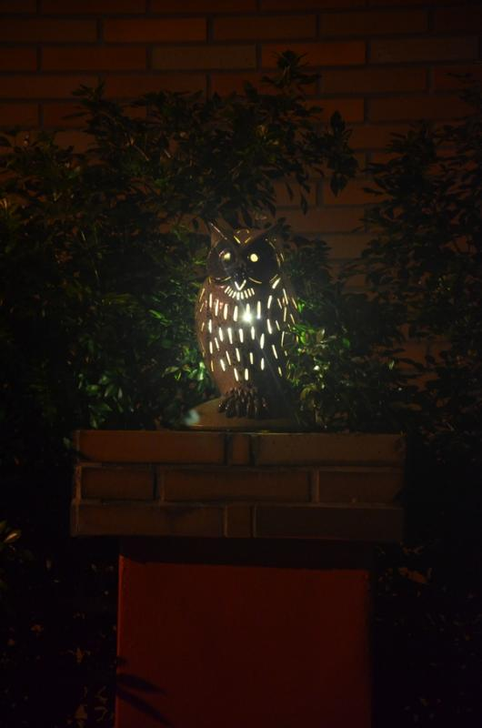
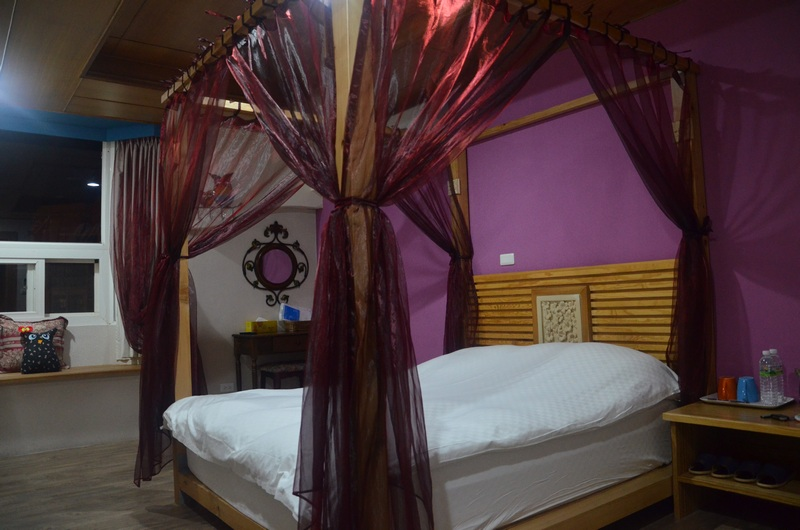

Brzy ráno jsme pokračovali v naší cestě do národního parku Taroko, kterou nám předchozího večera zablokoval sesuv půdy. Nyní už byla silnice zase průjezdná, ale přesto se místy jelo jenom v jednom pruhu, a tak nám cesta trvala o něco déle, než jsme předpokládali.
Ještě před vjezdem do národního parku jsme si udělali krátkou zastávku na vyhlídce na útesy Qingshui. Strmé pobřežní útesy jsou na východním pobřeží Taiwanu běžnou záležitostí. Qingshui cliffs jsou toho nejkrásnější ukázkou. Útes se skládá z tvrdých břidlicových a mramorových skalních stěn, které vystupují do výšky 200 až 1000 m nad hladinu moře. Tvoří nejvýchodnější část Centrálního pohoří a patří prý k nejstarším skalním útvarům na celém Taiwanu.

Qingshui cliffs
Poté už jsme pokračovali rovnou do turistického centra národního parku, kde jsme si vyzvedli mapu a nechali si poradit zajímavá místa, která stojí za návštěvu. K vidění je toho tolik, že se samozřejmě nedá za jediný den stihnout vše a navíc je spousta turistických stezek otevřená v závislosti na aktuálním počasí. Určitě je proto nezbytné informovat se na začátku cesty v turistickém centru na aktuální stav.
Národní park Taroko je se svými mramorovými stěnami, bujnou vegetací a horskou krajinou jedním z největších turistických lákadel na celém Taiwanu. Park má rozlohu 1200 km2 a stoupá od mořské hladiny do výšek kolem 3700 m.

Taroko v celé své kráse
Najdete tu téměř všechny biogeografické zóny zastoupené na Taiwanu, díky čemuž je Taroko domovem více než poloviny druhů rostlin i živočichů ostrova. Středem parku protéká řeka Liwu, která cestou vyhlodává hluboká údolí a kaňony, než se dostane dolů k moři. V jednom úseku své trasy vytváří soutěsku Taroko, 18 km dlouhý kaňon s mramorovými stěnami, který mnozí lidé řadí k nejkrásnějším asijským krajinným zajímavostem.

Řeka Liwu
My jsme začali naše putování po národním parku u tzv. Eternal Spring Shrine. Nedaleko od administrativního centra parku stojí na útesu nad řekou Liwu památník věnovaný 450 dělníkům, kteří přišli o život při stavbě silnice. Malý potůček, který nikdy nevysychá, prýští na skály pod památníkem a dodává mu vzhled, jako by měl vznešený šedý vous.

Eternal Spring Shrine
Poté už jsme pokračovali směrem ke Swallow Grotto - jedné z nejužších a také nejslavnějších částí mramorové soutěsky.

Swallow Grotto
Před vstupem do kaňonu jsme si v turistickém stánku vyzvedli helmy. Jejich nošení není povinné, ale faktem je, že už tady několik turistů zemřelo v důsledku padajícího kamení, takže opatrnosti není nazbyt. Zapůjčení helmy je zcela zdarma - vydají vám ji oproti uvedení jména a telefonního čísla - a navíc to na fotkách vypadá, jako by jsme byli na nějaké fakt drsné horské expedici :D

Účastnící expedice
Některé turistické stezky byly zpřístupněny pouze do určitého úseku. To byl třeba případ Baiyang Trail - cesta k vodopádu Baiyang byla uzavřena kvůli následkům tajfunu. První úsek stezky byl ale krásný - vedl po břehu řeky a hrozně mi připomínal malebné údolí Salzy v Rakousku.

Tudy cesta nepovede…
Než jsme se nadáli, den utekl jako voda a začalo se stmívat, což pro nás bylo znamení, že se musíme přesunout do Hualienu a najít si hotel, kde dnes přenocujeme. Hualien je druhým největším městem na východním pobřeží a údajně také jedním z nejpříjemnějších měst na Taiwanu. A já bych doplnila, že se tam taky nachází jeden z nejpříjemnějších hotelů na Taiwanu - Owl Castle :-).

Owl Castle
Byli jsme rádi, že nás osud zavál právě sem. Hotýlek byl hrozně levný, stylově vyzdobený soví dekorací (na Taiwanu jsou sovy považovány za symbol štěstí) a zvenčí vypadal díky desítce svítících sovích soch jako z Harryho Pottera :D! A personál byl moc příjemný a ochotný.

Naše soví hnízdo
Ještě ten večer jsme vyrazili podívat se do centra a… na noční trh, už zase :D! Konečně jsme tu ochutnali vyhlášenou taiwanskou specialitu - “stinky tofu”. Smrdí sice jako bolavá noha, ale chuťově je vynikající. Péťu teda moc neohromilo, ale já jsem si moc pochutnala, protože tofu zbožňuju!
Poté už byl nejvyšší čas vydat se zpátky do hotýlku. Ten večer jsme neměli ani sílu naplánovat itinerář na další den - Taroko nás totálně vyčerpalo a nad čtením průvodce jsme doslova odpadli. Nakonec bylo ale nesmírně osvěžující nechat následující den náhodě…
Ulice Hualienu